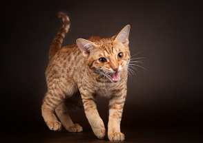

Люси - маленькая озорницааааааааааааааа
20 000₱
30 000₱
Оцикеты – абсолютно домашние существа, внешне очень напоминающие диких кошек, но не имеющие ни капли «дикой» крови. Они интересны тем, что, будучи окрашенными как дикая кошка, обладают темпераментом кошки домашней.